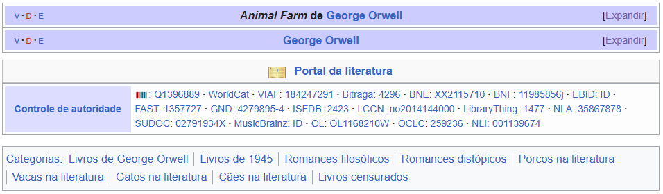

A Revolução dos Bichos
| Animal Farm | |
|---|---|
| O Triunfo dos Porcos [PT] A Revolução dos Bichos[BR] |
|

|
|
| Autor(es) | George Orwell |
| Idioma | Inglês |
| País | Reino Unido |
| Gênero | Sátira política |
| Editora | Secker and Warburg |
| Lançamento | 17 de Agosto de 1945 |
| Páginas | 112 |
| ISBN | 0-452-28424-4 |
| Edição portuguesa | |
| Tradução | Maria Antunes; Madalena Esteves |
| Editora | Europa-América, Perspectivas & Realidades, Círculo de Leitores |
| ISBN | 972-1-03147-X |
| Edição brasileira | |
| Tradução | Heitor Aquino Ferreira |
| Editora | Companhia das Letras |
| ISBN | 85-359-0955-9 |
Animal Farm (Brasil: A Revolução dos Bichos/A Fazenda dos Animais/A Fazenda dos Bichos / Portugal: O Porco Triunfante/O Triunfo dos Porcos/A Quinta dos Animais) é um romance satírico do escritor inglês George Orwell, publicado no Reino Unido em 17 de agosto de 1945 e incluído pela revista americana Time na Lista dos 100 melhores romances da língua inglesa. A sátira feita pelo livro à União Soviética comunista obteve o 31.º lugar na lista dos melhores romances do século XX organizada pela Modern Library List.
O livro narra uma história de corrupção e traição e recorre a figuras de animais para retratar as fraquezas humanas e demolir o "paraíso comunista" proposto pela União Soviética na época de Stalin. A revolta dos animais da quinta contra os humanos é liderada pelos porcos Bola-de-Neve (Snowball) e Napoleão (Napoleon). Os animais tentam criar uma sociedade utópica, porém Napoleão, seduzido pelo poder, afasta Bola-de-Neve e estabelece uma ditadura tão corrupta quanto a sociedade de humanos.
Para o autor, um socialista democrático e membro do Partido Trabalhista Independente por muitos anos, a obra é uma sátira à política stalinista que, segundo sua ótica, teria traído os princípios da Revolução Russa de 1917.
Enredo
Sentindo chegar a sua hora, Major, um velho porco, reúne os animais da fazenda Granja do Solar (Manor Farm) para partilhar um sonho: serem governados por eles próprios, os animais, sem a submissão e exploração do homem. Ensinou-lhes uma antiga canção, Bichos da Inglaterra (Beasts of England), que resume a filosofia do Animalismo, exaltando a igualdade entre eles e os tempos prósperos que estavam por vir, deixando os demais animais em êxtase com as possibilidades. O idoso Major (vulgo Casca Grossa) faleceu três dias depois, tendo tomado a frente os astutos e jovens porcos Bola-de-Neve e Napoleão, que passaram a reunir-se clandestinamente a fim de traçar as estratégias da revolução. Certo dia, Sr. Jones, então proprietário da fazenda, descuidou-se com a alimentação dos animais, fato este que se tornou a gota de água para aqueles bichos. Sob o comando dos inteligentes e letrados porcos, os animais expulsaram os humanos da propriedade e passaram a chamar a Quinta Manor de Quinta dos Animais pt / Granja ou Fazenda dos Bichos br, e aprenderam os Sete Mandamentos, que, a princípio, ganhavam a seguinte forma:
- Qualquer coisa que ande sobre duas pernas é um inimigo.
- Qualquer coisa que ande sobre quatro patas, ou tenha asas é amigo.
- Nenhum animal usará roupas.
- Nenhum animal dormirá em cama.
- Nenhum animal beberá álcool.
- Nenhum animal matará outro animal.
- Todos os animais são iguais.
Para os animais menos inteligentes, os porcos resumiram os mandamentos apenas na máxima "Quatro pernas bom, duas pernas mau" que passou a ser repetido constantemente pelas ovelhas. Após a primeira invasão dos humanos, na tentativa frustrada de retomar a fazenda, Bola-de-Neve luta com bravura, dedica todo o seu tempo ao aprimoramento da fazenda e da qualidade de vida de todos, mas, mesmo assim, Napoleão expulsa-o do território, alegando sérias acusações contra o antigo companheiro. Acusações estas que se prolongam durante toda história, mesmo após o desaparecimento de Bola-de-Neve, na tentativa de encobrir algo ou mesmo ter alguma explicação para dar aos animais sobre catástrofes, criando-se um mito em torno do porco que, a partir dali, é considerado um traidor.
Napoleão apodera-se da ideia de Bola-de-Neve de construir um moinho de vento para gerar energia (mesmo tendo feito duras críticas à imaginação do companheiro), e dá início à sua construção. Algum tempo depois, os porcos começam a negociar com os agricultores da região, recusando a existência de uma resolução de não contactar com os humanos, apontando essa ideia como mais uma invenção de Bola-de-Neve. Os porcos passam ainda a viver na antiga casa de Sr. Jones e começam a modificar os mandamentos que estavam na porta do celeiro:
- Nenhum animal dormirá em cama com lençóis.
- Nenhum animal beberá álcool em excesso.
- Nenhum animal matará outro animal sem motivo.
- Todos os animais são iguais. mas alguns animais são mais iguais que outros.
O hino da Revolução é banido, já que a sociedade ideal descrita, segundo Napoleão, já teria sido atingida sob o seu comando. Napoleão é declarado líder por unanimidade. As condições de trabalho degradam-se, os animais sofrem um novo ataque humano e já não se lembram que na época em que estavam submissos ao Sr. Jones era mesmo pior, mas lembravam-se da liberdade proclamada, e eram sempre lembrados por sábios discursos suínos, principalmente os proferidos por Garganta, um porco com especial capacidade persuasiva. Napoleão, os outros porcos e os agricultores da vizinhança celebram, em conjunto, a produtividade da Quinta dos Animais. Os outros animais trabalham arduamente em troca de míseras rações. Assiste-se assim a um escárnio grotesco da sociedade humana.
O slogan das ovelhas fora modificado ligeiramente, “Quatro pernas bom, duas pernas melhor!”, pois agora os porcos andavam sobre as duas patas traseiras. No final, os animais, ao olhar para dentro da casa antes pertencente a Jones e onde os porcos agora vivem em considerável luxo em relação aos demais animais, veem Napoleão e outros suínos jogando carteado com Frederick e Pilkington, senhores das granjas vizinhas, e celebrando a prosperidade económica que os seus acordos proporcionam às suas quintas. Numa visão confusa, os animais já não conseguem distinguir os porcos dos homens.
Personagens
Porcos
- Major – Um velho porco doméstico premiado em uma exposição que dá a inspiração que alimenta a rebelião no livro. É uma alegórica combinação Karl Marx, um dos criadores do comunismo, e Lênin, líder comunista da Revolução Russa e da recém-criada União Soviética, onde elabora os princípios da revolução. Seu crânio sendo colocado em exposição pública reverenciado lembra Lênin, cujo corpo embalsamado foi colocado em exposição.
- Napoleão – Grande porco da raça Berkshire. De poucas palavras, mas com reputação de possuir um braço forte. É comumente associado como alegoria de Joseph Stalin.
- Bola de Neve – Rival de Napoleão e líder após a queda de Jones. É comumente associado como alegoria de Leon Trótski.
- Garganta – Porta-voz de Napoleão. É comumente associado como alegoria de Viatcheslav Molotov ou ao Pravda
Equinos
- Sansão – O mais devotado dos animais. Trabalhador incansável, segue duas máximas na vida: "Trabalharei cada vez mais" e "Napoleão tem sempre razão", geralmente sendo uma alegoria ao proletariado.
- Benjamim – O mais cético dos animais. Não acredita na revolução e se mantém alheio às disputas políticas. Há interpretações que o colocam como a representação do autor, na fazenda.
Outros Animais
- Ovelhas – Limitadas intelectualmente, as ovelhas não sabem ler e não conseguem memorizar todas as regras da granja, resumindo-se a balir incessantemente "Quatro pernas bom, duas pernas mau!". Em diversas passagens, debates são impossibilitados pela barulheira do rebanho.
- Cachorros – Tirados da mãe logo cedo e criados por Napoleão, tornam-se sua guarda pessoal. São eles os responsáveis por ajudar Napoleão no golpe contra Bola-de-Neve e também em mantém os outros animais sob controle, através da violência e do medo, representando a KGB
- Moisés – Corvo domesticado de Jones, foge depois da revolução para reaparecer algum tempo depois, sempre incentivando os animais a acreditarem que uma vida melhor os espera no céu, com várias promessas que incluem montanha de amar e feno à vontade. Apesar de não trabalhar, sua presença é tolerada pelos porcos, sendo a representação da Igreja
Humanos
- Sr Jones – Dono da Granja do Solar. Alcoólatra e cruel com os animais, que sofrem pelo chicote e pela fome, sendo uma representação do czar Nicolau II
- Sr Frederick – Dono da Granja Pinchfield, uma pequena fazenda vizinha a Fazenda dos Bichos. Entra brevemente em aliança com Napoleão, para depois atacar a Granja. É comumente associado como alegoria de Adolf Hitler, e o acordo e o ataque a Pacto Molotov-Ribbentrop e Operação Barbarossa, respectivamente.
Referências
- «Biografia de George Orwell». Estante de Livros. Consultado em 4 de Novembro de 2010
- 100 Best Novels - acessado em 20 de abril de 2014
- História Viva, 1, p.13. Editora Duetto. São Paulo.
- "Why I Write" (1936) (The Collected Essays, Journalism and Letters of George Orwell Volume 1 – An Age Like This 1945-1950 p.23 (Penguin))
- No Brasil, o termo "Quinta" é frequentemente traduzido como "Granja"
- Rodden, John "Introduction", in: John Rodden (ed.), Understanding Animal Farm, Westport/London (1999), p. 5f.
- Conforme Christopher Hitchens, "as pessoas de Lenin e Trotsky são combinados em um [i.e., Snowball], ou, pode até ser [...] para dizer, não existe nem um pouco de Lênin." (Hitchens, Christopher. Why Orwell Matters, Basic Books (2002), p. 186f).
- Orwell, George (2006). Peter Hobley Davison (ed.). The Lost Orwell: Being a Supplement to The Complete Works of George Orwell. Timewell. ISBN 978-1-85725-214-9.
Ligações Externas
